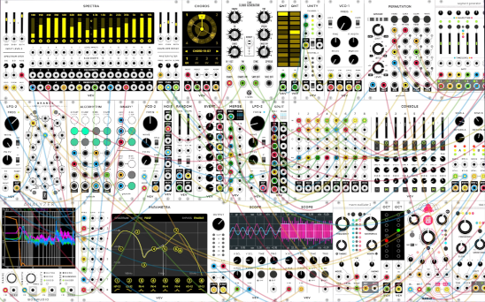
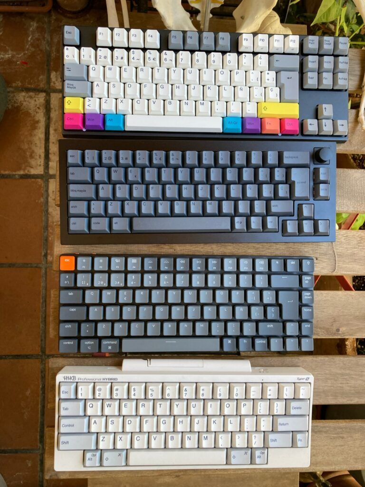
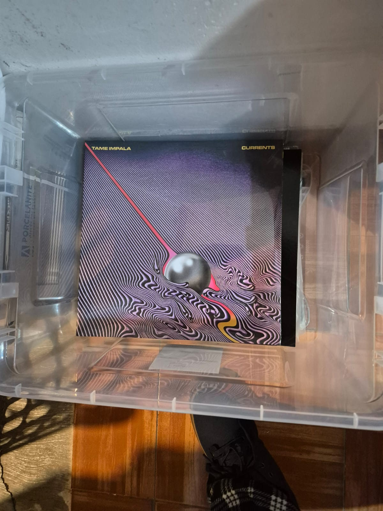

Contacto
 esteban.otrascosas@gmail.com
esteban.otrascosas@gmail.com
Mis Hobbies

Música Electrónica: Experimento con cajas de ritmo y sintetizadores modulares.

Teclados Mecánicos: Apasionado por la ergonomía y la personalización del sonido de tecleo.

Vinilos: Coleccionista de formato físico, desde rock clásico hasta electrónica.
Acerca de Criptografía: La Máquina Enigma
La Máquina Enigma fue un dispositivo electromecánico de cifrado utilizado por la Alemania nazi durante la Segunda Guerra Mundial. Su seguridad residía en un sistema de rotores giratorios que alteraban la configuración del cifrado con cada tecla presionada, creando miles de millones de combinaciones posibles.
Aunque se consideraba "irrompible", el trabajo pionero de matemáticos polacos y, posteriormente, el equipo de Alan Turing en Bletchley Park, lograron descifrarla. Turing desarrolló la Bombe, una máquina capaz de explotar errores lógicos y humanos en los mensajes alemanes.
Este avance, conocido como proyecto Ultra, permitió a los Aliados anticipar movimientos estratégicos, especialmente en la guerra submarina, acortando significativamente la duración de la guerra y salvando incontables vidas.